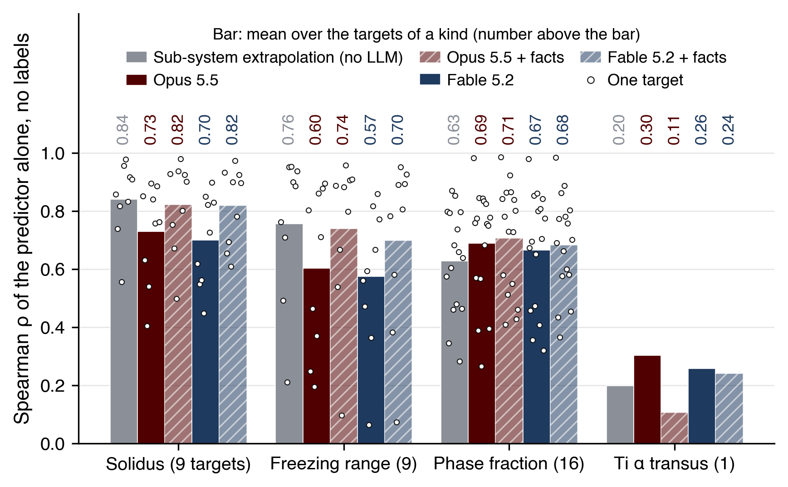

MATERIALS SCIENCE & ENGINEERING
TEXAS A&M UNIVERSITY
Department of Materials Science and Engineering
51

Mean ρ over 35 targets
extrapolation: 0.70
Opus 5.5: 0.67, with facts 0.73
Fable 5.2: 0.64, with facts 0.71
Phase fractions:
0.63, Opus 0.69, Fable 0.67